| 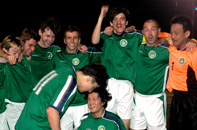 |
|
Hibs Win the Double. A 4-1 victory over BFC meant Hibs followed their league title with a 2nd FJ Cup title. more
|
Sala Struck By Mayonnaise!!
Shin Suna, Saturday 22nd May.
Actually a malaise, but mayonnaise is far more interesting, especially with tuna fish. Out of the Cup in the semi-final despite being up 2-1 with 6 mins left (4-2 BFC), and held to a draw in the league by Zion (1-1).
Ay carumba, what the hell happened to Sala's unbeaten run of 2010!!! Vanished like a virgin on prom night as Papas would say in Point break. Gets better every team I see it. more
ST
Swiss Ground Jets 2nds to Win the FJ Plate
| 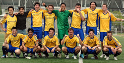 |
|
A Jubilant Swiss celebrate their FJ PLate win.
|
Fukuda Denshi, May 22nd, 2010.
It was a nice season for the Swiss: A sweet winning streak that brought promotion to Division 1, good performances in the New Year's and Charity 7's and a great turnout of players for the games. The plate would be the icing on the cake: Not the most prestigious title, but a title nonetheless.
The opposition in the final were the Jet 2nds, a team that is still in the run for promotion to the second division and looked like a stronger oppostion than their first team in the semi-final. more...
PS
| 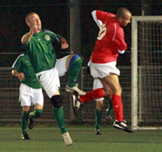 |
|
Dave Callaghan goes head to head with Jon Day....literally.
|
Hibernian Win Title with Game to Spare
YC&AC, Saturday 8th May.
If the guys are taking turns dry-humping Dan in the center circle after the game, then you know something went right. Hibs are finally champs again, and it's because this year we can win ugly when we have to.
It didn't look good early, BFC were loose and annoyingly confident. A bad call on the formation plus nerves didn't help, and the Brits were all over us. . more
AP
HQ: 2007 MVP Weakest Link
Fukuda Denshi, Saturday 22nd May.
TML Season 5's MVP, the skillful Jorge Kuriyama looked less than ordinary in a thrilling game between Lions and FC International. The game had High Quality everywhere..one of the best referees, three honest and accurate linesmen (myself, Aziz, and Rouven)... great weather on a perfect surface...and quality football that made the Champions League final look even duller than it actually was. more...
HS
Vagabonds Soar Above British Embassy
Hachioji Park, Saturday 22nd May.
After months of scoreless incubation the Vag’s chrysalis emerged against British Embassy as a beautiful six-goal butterfly. The weather warm, but not hot, the air moist but not muggy, Steve Glenn’s controversial email before the game…who knows nature’s trigger? And who cares? The Embassy had two goals but they were both consolations. more
GQ
Who's Gonna Win the World Cup
Tokyo, May 18th.
One of the TML referees was asked to write articles about teams in this years World Cup
See if your views match those of one of our top refs (even if you can't understand his English). more
FJ
KFC Tokyo Wins Hong Kong 7s Masters Tournament
| 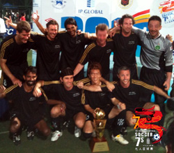 |
|
KFC Win Hong Kong 7's Masters.
Kirk Neureiter and his mob of TML, Ex-TML and other players beat Andy Cole's all-star in the final 2-1.
|
Hong Kong Football Club, Weekend 15/16th May.
KFC Tokyo, organized by former TML Swiss Kickers Captain Kirk Neureiter went all the way walking away with the prestige cup in over 35 competitions.
The team consisted of 7 nationalities, Kirk shut down opponents best strikers, who teamed up with ex-professional Frenchman Frederic Rault and Hibs/Swiss TML great Rafael De Marchi in defense. Midfield was manned by Scotsman Martin Tierney, Malaysians Puva and Kuru, TML Swiss player Takahisa Suzuki, and Jason Bailey. Striker was an eventual competition MVP David Serene, also an ex-pro, who was simply unstoppable all day. Hitoshi in goal was impressed what he had in front of him, it made his job rather easy. more...
HO
Lions Off to a Flying Start vs Jets
Hachioji Park, Saturday 15th May.
Lions scored probably the fastest goal of the season, with Jets kicking off, and barely having 2 touches, Yasu on the left wing picked up the ball, twisted and turned a player, dashed past the next, broke into the box, and laid off a beauty to an unmarked Ahmed G at the far post to put Lions ahead with barely 60 seconds gone!
Omar could’ve doubled the lead with a fierce shot from the ‘D’, but well saved and tipped over for a corner. more
HS
| 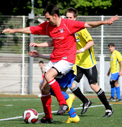 |
|
Pablo Pomares does the 'Airplane' while shielding the ball from Geckoes midfield.
|
BFC Scoop 3 Points in Stop Start Season
ASIJ, Saturday 1st May.
BFC put out their youngest side in many years with more under 30s playing than over 30s, but it was the over 30s who probably edged the battle of the BFC generations with an aging back line (average age closer to 40 than 30) keeping a deserved clean sheet and with Day and Himmer (we won't go there) both coming back from injury to show typical composure in their play more...
JM
Dominant Sala Held by Lions
Hachioji Park, Saturday 25th April.
"The best teams win continuously, the rest don't." That was the message before kickoff from Sala's captain, Guido. Unfortunately, Sala are definetely in the latter category. After bossing YCAC on their home turf last week, they just couldn't grab all 3 points against Lions, despite dominating possession and chances, so this one finished in a draw. With a solo run and deflected shot from Abu of Lions and a solitary, but quality, equaliser from Toby the points were shared as the game finished 1-1. more
ST
Lions Tame the Double Trouble
Hachioji Park, Saturday 25th April.
After a hectic week in Hong Kong, and lack of sleep, the last thing I wanted was to find myself playing a full game in central defence due to having only 12 players against a strong Sala line-up, on the high after beating last year’s champs, and against us, after losing badly to Hibs with 8 players!
However, whenever Lions show up an hour before the game, and with the oldies (like your truly) are forced to play....commitment shows, and we Lions play our hearts out. more...
HS
King George Soar as Jets are Grounded
| 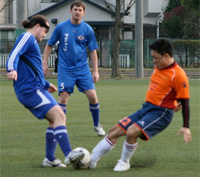 |
|
KGFC knock JETS from the top spot in Div 3.
|
Horisaki Koen, Sunday 18th April.
Snow in April, a volcanic eruption and Spurs beating Chelsea; surely omens that something big was about to go down. It was. King George vs. Jets 2nds in Owada, with both teams knowing that first place in the league was at stake. The previous meeting ended in a 1-1 stalemate on cold evening back in December, would the third division’s frontrunners cancel each other out yet again?
The evening began with both teams watching the vacant Horisaki Koen pitch knowing full well that the draconian owners wouldn’t dream of letting them on the unused pitch until exactly ten minutes before the game. more
BS
YCAC Scalped by Sala
YC&AC, Saturday 17th April.
Undefeated at home since 2008, YCAC have turned their home turf into a bit of a fortress over recent years. It was suprising then that coming into this fixture the Sala boys fancied themselves to win, and to score 3 goals in the process!! "Fools!" you would have cried. But, this is Sala 2010! Anyway, sometimes you just think it's going to be your day. And, straight from kickoff it was. With 2 goals, and a MOTM performance from Sam Matthews, and a spot kick from Lenny Tui, Sala scalped YCAC 3-2 for a deserved victory. more...
ST
YC&AC Suffer First Loss of Season against Sala
YC&AC, Saturday 17th April.
An early Lenny Tui penalty kick and two goals from Sam Matthews in the 1st half sent Sala to a 3-2 victory against an undefeated side in TML competition since their last loss against the Tokyo Hibernians on October 4th, 2008. YC&AC now has "no margin for error" with their title race between the Hibs, if they are hoping to claim their 2nd consecutive TML title.
YC&AC had just returned from an outing to Singapore for teh Soccer Sixes, to read about that, click here
JT
Panthers Halt Swiss Roll!
| 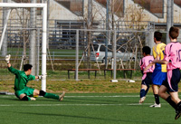 |
|
Sho Itaya secures the win for Panthers.
|
Fukuda Denshi, Sunday 10th April.
The Swiss have been the form team in Division 2 over the last couple of months, putting together a string of results that have taken them to the verge of promotion and within site of the summit. Panthers, on the back of their first defeat of the season last time out and missing a number of key players (and me), were looking a bit wobbly and in danger of undoing all the good work. So the scene was set for a good old fashioned 6-pointer at Fukuda Denshi. more
AV
Sala Set Pieces Kill Celts
Fukuda Denshi, Sunday 4th April.
Sala did the league and cup double on the Celts mainly through hard work, solidarity and 3 duff goals from set pieces. Sweet was the victory, but sweet the goals were definetely not. 3-0 to Sala was the final score after close range nods and sclaffs from Dan (2yds), Masa (8yds) and Sam (6yds). The solidarity was in each players commitment to not score a good goal and to not out-do his brother in arms. more
ST
Spoils Shared in Sakura Showdown
| 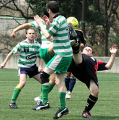 |
|
An acrobatic Nick Webb scares John Conama
|
Hodogaya Koen, Saturday 3rd April.
Sakura in bloom, sunshine, and a perfect pitch all combined to provide the perfect setting for a pre-hanami showdown at Yokohama’s Hodogaya complex.
The opposing teams went into the game with contrasting recent records. Celts second’s had scraped a 2-1 victory over foot of the table Guarana Republic, whilst the Pumas were still searching for their first 3 points of 2010.
The Pumas line up of late has started to look much more settled and it was bolstered by the attacking presence of Panthers regular goal scorer Sho. The Celts had the clear height and weight advantage, but with such a wide and spacious pitch in use it would be the more streamline players who would benefit. more
TS
Geckoes Drop 9 Goal Thriller in the Far Reaches of Saitama.
Horisaki Koen, Saturday 3rd April.
The Geckoes made a dream start on Saturday night, with Jonas Mogui scoring a brace inside ten minutes. Their domination continued until mid-way through the first half when FC International clawed themselves back in to the match, pushing a loose midfield ball in to the area where it was laid off and finished from 4 yards. more
CP
YC&AC Push Ahead in Title Hunt
YC&AC, Saturday 3rd April.
YC&AC demonstrated another series of brilliant team effort, scored three goals and cruised to a 3-0 shutout against TML rival BFC on Saturiday night. more
JT
| 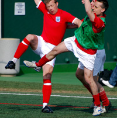 |
|
Players dancing for Joy at the chance to play football and raise money for charity.
|
YCAC Have The X Factor.
YC&AC, Monday 22nd March.
Thankfully the strong winds and rain of Sunday morning subsided, so that when the teams entering this years 6th edition of the Charity 7's, arrived Monday morning at YC&AC it was to sunny skies and hardly a breeze.
It was all action in the football though with a total of 142 goals being scored in the 38 matches that were played. YCAC 'X' beat their brothers in arms, YCAC in a thrilling final to walk away with the Champions cup.
It was the 2 beneficiary Charities, Refugees International Japan and Jeannie and Billy’s Children’s Foundation in Cambodia, who were the real winners though. They will both receive half of the ¥520,000 raised by the event. for the full story and photo galleries click here
RH
George Roast Guarana in the Morning Sun
| 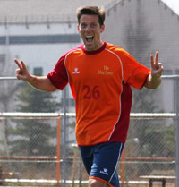 |
|
Dan Bard celebrates scoring a hat-trick in KGFC'S demolition of Guarana.
|
Fukuda Denshi, Sunday 14th March.
The squad was looking a little different than last week, with Tomoki working, Ginger Iain back in Brum and Steinson cavorting in the land of nervous sheep and curious farm-hands. On the plus side back in were “Dangerous” Dan Bard, “Feisty” Fernando Bermudez and “Aggressively Mobile” Adz McCann so the team wasn’t in any danger of being under strength. The sun was shining, everyone was remarkably genki considering the early start and we had plenty of fans in tow! It was only when we got to the pitch that we realized the “fans” we had accumulated were here to watch some mob called JEF united play later that day. Well, their loss. more
JB
Sat-Nabs Points.
| 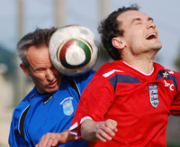 |
|
'Heads-up' Mark Van Den Bosche challenges Craig Palmer for a header.
|
YC&AC, Saturday 13th March.
A sunny yet blustery YCAC played host to the Old Boys & BEFC, a match which when last played served up 7 goals and saw the Embassy squeeze past...ahem.. 7 men. No such problems this time round as the game kicked off with a full complement of players and BEFC first to have the wind behind them.
Rather than proving to be beneficial, the wind seemed to create more problems than good. Passes were over-weighted and beyond the reach of the strikers who were kept relatively quiet for the first 20 minutes. more
RH
Sala Win in League and Cup with Six For and Dan Against.
Hachioji Park, Saturday 27th February.
We love 2010! Just like a cute Japanese t-shirt this is how the resurgent Sala feel. Continuing their current good form, Sala cruised past Saitama Jets 3-0 in the league, then bossed the Celts 3-1 in the cup, picking up deserved victories in both games. Jets were technical and fast without much threat and Celts were skillful, direct and physical without much speed. more
ST
Panther’s Penalty ‘Steals’ the Points.
Hachioji Park, Sunday 28th February.
As the only team to put a dent in the Panther’s otherwise flawless championship campaign (a 1-1 draw back in October). The Panthers v Vagabonds rematch was always going to be a highly anticipated fixture. more
TS
Celts Maul Weakened Lions.
Fukuda Denshi, Saturday 27th February.
Three straight losses going into this game meant that a very determined Celts squad assembeld in Soga on Saturday night. Two narrow loses to YCAC and BFC added to a heavy, heavy loss to Hibs left the Celts wondering what they had done to upset the footballing gods. Celts also felt hard done by the 1-1 result earlier on in the season between these two teams. more
PM
| 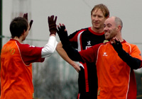 |
|
Ben Steinson celebrates scoring the first goal for King George as they beat Pumas 3-0
|
Pumas Hung Out to Dry After Royal Downpour
YC&AC, Sunday 28th February.
I love rain, early mornings and epic journeys to far away lands, so another round of TML fixtures was just the ticket. This time the venue was Yamate’s very own YC&AC. The fixture: Pumas vs. King George FC. The last meeting was decided by a late goal scored by the league’s Gubernatorial Grand Marshal and international ‘Tall Guy’ Sid Lloyd in a 2-1 win for the Pumas. KGFC were out for revenge and the all important 3 points it comes with; revenge is a dish best served cold, so the heavy rain and Arctic winds were fitting conditions. more
BS
Subarashi Sho Steals the Spoils.
Fukuda Denshi, Sunday 28th February.
After the 12 goal thriller last time (in which BFC secured the spoils) it was anyone's guess what the result of this game would be following a mixed start to 2010 for both teams. As it was, a devastating display of trickery in the counter attack from BFC's Shosuke was the main difference between the sides, though over the course of 80 minutes the difference was small. more
| 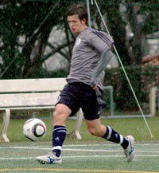 |
|
Young mikey Taw continues his goalscoring run as YCAC defeat Geckoes 3-0
|
Slick YCAC Glide Past Geckoes
YC&AC, Sunday 28th February.
On a cold, wet, Sunday morning YC&AC managed to keep their unbeaten run going as they comfortably beat a tough and well organized Geckoes team.
In conditions that were far from ideal for playing great football, both teams tried their best to get the ball down & play. After a slightly nervy start, YC&AC were rewarded for some slick build up play when Mikey Taw neatly slotted home to put the league champs in front. more
RP
Panthers Complete Diego Double.
Hanno, Saturday 20th February.
It took half of the Panthers team 40 minutes to get from Shibuya to Yoyogi in 'The Machine's', red machine on Saturday evening, and it was looking somewhat girigiri as to whether we would have a team on the pitch (which was another 60km away) by kick off. more
BC
Jimmy Burns Barbs
Fukuda Denshi, Sunday 21st February.
This was a six-pointer. Embassy’s slide in recent weeks, culminating in a 4-0 drubbing at YCAC last time out, had the alarm bells ringing. A meeting with an improving Barbarians, who had beaten us last month, was a massive test of character, and thankfully a test that was passed….just! more
RH
William Wallace Would Have Been Proud of the Lion Hearts
YC&AC, Sunday 21st February.
On a beautiful Sunday morning, a weak Lions squad were defiant not to be defeated again by the YC&AC after a very entertaining game at the start of the season. more
MS
Whinging Sala Grind to a Halt…
Shimo Takaido, Sunday 21st February.
Alas.Sala. Bon sport, trop snob. Enough word games. (If yr in a hurry skip the first three paragraphs here.) FC International 3, Sala nil. (Transition word.) This is tough to write. What with Roddy Charles' legacy of stellar match reporting, and Scott T's fine writing form it's intimidating more
TM
FC battle to 3 points against Celts
ASIJ, Sunday 21st February.
BFC started the day with 14 men, by kick off they had 10. Doyle, Day, Denham and Ring lost to the a ticker tummy, work, amnesia and drink - the gaffer is not happy. 4-4-1 it is then. more ...
JM
Stoneds Blown Up by 180kg TNT Compound.
Hanno, Saturday 20th February.
A highly charged encounter between Jets 2nds and Stoneds, saw the Jets triumph 1-0 thanks to a deadly blast of Tomo ‘n’ Turner mid-way through the 2nd half . On a cold night in Hanno, the Jets took a giant stride in their promotion push to TML2 by doing the double over Stoneds and making it 3 wins in a row. more
JR
Hibs Held back by Solid Inter Squad
Hachioji Park, Sunday 14th February.
Well, that sucked. We knew FC International would be tough and they came out on all cylinders, harassing us all over the pitch. Neither side had any clear-cut chances, but they won a few corners, and a great header near post off one put them up 1-0. We slowly got ourselves back in the game, but couldn't finish, and that's how the first half ended. more ...
JA
Sala Start Slow, Then Swin.. Things their Way.
Fukuda Denshi, Sunday 14th February.
What do Soga on a Sunday night and Paris Hilton have in common? It’s a slot nobody wants.
I guess the reason for the resistance is…well…homework? Do it earlier. Need to prepare for work the next day? Prepare earlier. Want to relax and put feet up on a cold Sunday evening? more
GL
Lancaster, Jets Repel Sun
Hachioji Park, Saturday 13th February.
It certainly was a funny old game. Jets 2nds dominated the first half, with Gildart and Shikama buzzing, only for a sharp counter from Sun to put them 1 up. Chances were made and missed, until Piper's block-tackle fell to Garner just outside the box. He promptly thumped it into the top corner off the underside of the bar, to draw the Jets level at half-time. more ...
GG
| 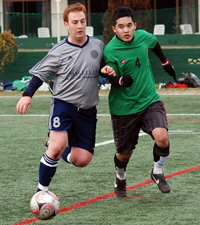 |
|
'Ginger' Anthony Savages battles for the ball as YCAC overcome Zion 4-2.
|
YCAC Scramble Up as Hibs Stumble
YC&AC, Sunday 7th February.
Another glorious sunny day at YC&AC and Three more points for the Silver Machine - although they were pushed all the way by a plucky Zion side.
After a rather dull start to the game, things livened up when Hide Yoshioka was put clean through on the left hand side, cut in towards goal & finished exquisitely, drilling his shot in to the bottom right corner. more
RP
Shane FC Crowned Kings of Omiya in Derby Day Doubles Act
Horisaki Koen, Sunday 7th February.
The division 3 Omiya derby always seems to provide an exciting encounter and this Sunday`s match was to prove no exception to the rule. On a freezing cold,and windy evening Shane FC and King George FC met with both teams looking to claim maximum points from the encounter in order to close the gap on Division leaders Jets 2nds. more ...
MG
| 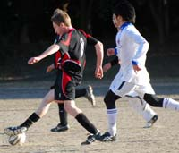 |
|
Tom Sheard cuts his way through the Yabe Midfield on another of his runs.
|
Pumas Battle Yabe to Scoreless Draw in Closely Contested Union Match
Oi Futo Dirty, Sunday 7th February.
As an American soccer/football player, you appreciate and try to emulate the tough and tested British style of play. After playing in Japan, you quickly realize the pace and finesse in the Japanese style. In Division 3 of the TML, all style gets thrown out the window, and you end up with a game that more resembles fugby - something in between football and rugby. more
ST
Hatrick of Hatricks as Panthers Hit 10
| 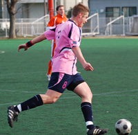 |
|
Ben Cordier about to pull the trigger, He scored one of three hat-tricks!
|
Hachioji Park, Saturday 6th February.
There aren't many games that serve up 3 hatricks and all from the same side, but that was the treat in store for the galleries massing around the pitch at Hachioji Park. The “galleries”, otherwise known as, Romen's mate from England, was press ganged into the photographer role and he had plenty of action to keep him busy – thirteen goals in a feast of attacking football. more ...
AV
BFC Move to 3rd with Comfortable Win Over Angry Lions.
Hachioji Park, Saturday 6th February.
With the first half almost ending in farce and the second half ending more like a training match this was never a game for the purists. The 4-0 scoreline probably does do justice to BFC's dominance of the game but in fairness to Lions they battled well in defence and kept trying to take the game to BFC even when a few goals behind. more ...
JM
| 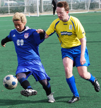 |
|
Geckoes Captain Simon Bromwell Leads his team to another Victory.
|
Geckoes Top Jets at Hachioji
Hachioji Park, Saturday 6th February.
The Geckoes had a good team out versus the Jets on a chilly Saturday at Hachioji Park. One of the rare Saturday and afternoon games we've had this year. Was a bit nervy as the ref was not there and we'd be warned by the league to make sure to start the games right on time, nearly had to pick a player from one of the teams do the honors, but Orlando turned up and were kicking off soon after that. more
PZ
Thierry Henry Strikes Again / The Hand of Jon
Hachioji Park, Saturday 6th February.
On a freezing night in Hachioji Park, Lions were looking to continue their good run of 3 wins against a strong BFC side, and although Lions were as usual missing crucial players, the game started well with Lions absorbing BFC attacks, until a cross that just slipped through Orlando’s hand, fell beyond the BFC striker who pushed the ball into the net with his hands. more
HS
JETS 2nds Bounce Back to Winning Ways
Hachioji Park, Saturday 30th January.
Division 3 is certainly tight this year. On any given day, any of the teams can beat each other, as the Jets 2nds found out when losing their last game to an improved Yabe. There was some pride to play for in this game, then, as the Jets sought to justify their place at the top of the league. more ...
GG
Aranda-Cadabra! Carlos Conjures 3 Points.
Hachioji Park, Saturday 30th January.
The JETs simply refuse to accept their place in the TML 'eco-chain' ... They brought half the J-League with them and a tea-cozy but their stubborn resistance was broken by an Aranda special. more ...
AH
| 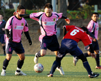 |
|
Pink Panther striker, Ma, dances his way through BEFC's midfield
|
Panthers Storm the Embassy!
Setagaya Koen, Saturday 30th January.
…..............Well, not exactly, but you don't want to let the facts stand in the way of a good headline!
BEFC gave the Panthers a good game last time up, losing by just the odd goal in 5, and they weren't about to take it lying down this time around. Conditions were perfect with a clear blue sky, nice pitch at Setagaya Koen to show off our silky skills and for once, it didn't take an hour and half to get there. more
AV
Sala Get Clinical To Upset BFC
Fukuda Denshi, Saturday 23rd January.
With BFC missing a few key players, the match being played in Chiba and with the sun residing in Aquarius along with Venus (check your horoscopes...it's true!) there was the distinct smell of a shock in the air for this 3rd vs 3rd bottom TML clash. And, Sala delivered. Courtesy of wunderstrikes from Pete, Scotty and Shige. A solitary reply from Pabs for BFC meant Sala trumped this one 3-1. more ...
ST
Hangovers Don't Hold Back Hibs
Hachioji Park, Sunday 24th January.
As many TMLers can attest, worse than just having a hangover is having one and having to show up to the soccer ground and play a tough opponent. More than a few lucky Hibs players had that honor on Sunday, and our opponent was none other than the Geckoes, a team that has been improving a lot during the season and proved that by winning against FC International. more
AP
Muzzy Hattrick Helps Vags Past Babas.
Hachioji Park, Saturday 23rd January.
3 times we have done battle with the ‘basement’ team of the 2nd division and 3 times we have come out victorious but far from comfortable. It is a very good division.
Vags started very positively and were 2 up within 10 minutes or so – Muzzy hitting a deflected shot which spun high into the net after a great aerial challenge by Nao. more ...
RS
Shane Keeper Stops Pumas Fightback.
YC&AC, Sunday 24th January.
Another battling performance by the Pumas saw the same result as last week: a glorious defeat. Is there such a thing? Yes. Being part of a 4-3 thriller, full of spirit and determination by both teams does give one a satsifaction that easy victories do not. In both games, not one player looked angry or dejected after the game, more beaten but unbowed, feeling proud. More of this should see the victories come sooner than later. more
KG
Waves of Attack at the Pentagon
YC&AC, Saturday 23rd January.
Lions had a very challenging game playing at YCAC, the usual pitch or an unfamiliar new look?.....a 5th corner flag!
Lions felt they were playing on 5 sided pentagon pitch with Zion’s linesman keeping his flag up throughout the entire game! more ...
HS
Sala Dent BFC 's Title Hopes.
Fukuda Denshi, Saturday 23rd January.
An under-par BFC came up against a decent (though, in my view, still some way off their best) Sala and it was Sala who walked away with the spoils, leaving BFC in TML no man's land and rueing the unavailability of key players.. more
JM
Sala Start 2010 With a Bang! And a..... Squeak
Hachioji Park Sunday 9th January.
Happy New Year to all, and best wishes to footy lovers everywhere (except Man City fans).
Simply summed up. First half: bang, bang, bang. Second half: squeak, squeak, squeak.
With a 3 goal 20 minute blitz in the first half Sala over-powered Zion in this basement battle and wrapped up the points early. Brookey, Toby and Sam plundered the goals. more ...
ST
Hiro the Hero for the Geckoes
YC&AC Sunday 9th January.
The Geckoes kicked off the year with a hard-fought victory over FC International. Boosted by the Clash's last second victory over the Celts 2nds just before kickoff made us feel that fortune may have been with the club on the day, and indeed it was... more
PZ
Best Foot Backwards! Kazuki's Karate Kick Rescues BFC
YC&AC Saturday 9th January.
The Kit
Move over Leon Trotsky (aka the artist formerly known as Kevin Gray).
Eschewing the customary New Year's greeting a flustered BFC captain kicks off 2010 with: 'Al what's the worst thing you think I could have left behind?'
Wife: check. Kids: Check. Both of them. Normally Evans 'cleans' the kit (giving the BFC players that delightful odour of stale Marlboros which has been scientifically proven to boost the team's performances). Alas.
Upshot: BFC spend a frantic 20 minutes rifling through the lost-and-found at YCAC for spare shorts and socks. Kazuki Tadoroki has no shirt and contemplates bare-chestedness. 'Saco' Sakai tries on a pair of very smelly Hawaiian beach shirts. BFC look gay. more ...
BFC
| 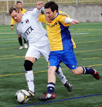 |
|
Lenny Tui takes on the Swiss in the Plate final at the Footy Japan New Years 7's
|
FC International Take NY 7's
Footy Japan New Year Soccer 7's, 2010.
Oi Futo Dai Ni, Oi Chou Rinkai Koen.
Sunday, January 3rd, 2010..
Vags clashed with Hell Cats, Swiss clashed with Clash and the Clash clashed with the refs. Yes folks, a vast array of colour set against the dazzling streams of the Oi Dai Ni pitch markings were on full view this past Sunday at the New Year 7’s tournament. Thankfully bibs were on hand to discriminate the teams and all was set for a day of exciting footy.
FC International and Sala FC went on to pick up the first trophies of the new decade leaving others to rue missed chances and wonder what went wrong. Read on ...
FJ
YC&AC Deadlocks Hibs 1-1 in 2009 Home Finale
YC&AC Sunday 19th December.
YC&AC closed their 2009 schedule with a 1-1 deadlock against the Hibs and remained unbeaten on the year for TML competition. more ...
JT
4 Goals at 2 Ball River
Futako Tamagawa, Saturday 18th December.
Panthers made their Nikotama debut on a cold and blustery sunny day down by the river. The pitch, heavily used throughout the year was bald and muddy in the middle and divoty on the flanks. Perfect conditions for wingers to shank crosses. Combined with the winds flying off the Tama, a beautiful game was not on the cards. more ...
BC
10 man YCAC hold Hibs to Draw
YC&AC Sunday 19th December. Hibs were of course expecting a tough game against the reigning champs at fortress Yokohama, but not a steel cage match. YCAC came in right away with several brutal tackles and a flying elbow by perennial sportsman Joe, and as we duly responded the game showed signs of boiling over. . more ...
JA
Vagabonds Brave Cold to Shrug Off Embassy
YC&AC Sunrday 13th December.
Kit there, Evans there, going well……….but no bibs, unbeknownst to me Muzzy had apparently lost them. We play in red – Embassy play in red - they don’t have bibs. A bit like America’s foreign policy over the last 65 years…..nothing ever really goes as you thought it would. But YCAC stepped in to do a Jimmy Carter at Camp David and thus stop an all out battle over who would have to play in skins on this reasonably chilly Sunday evening. more ...
RS
| 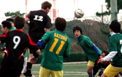 |
|
Tom Sheard rises for a header vs GR.
|
Pumas Allow Guarana to Grab Point
YC&AC Sunrday 13th December.
Up in the Yokahama Hills YCAC hosted PUMAS Vs GUARANA REP. In a very tight league, a win for the Pumas would have seen them jump up to third in the table, but with some injuries and last minute pull outs their squad was a little ‘thin’.. more ...
MR
White Water Grafting
Fukuda Denshi, Saturday 5th December.
I'd checked the weather forecast on the tele in the morning; a fluffy white cloud with a few water drops in the top right corner. OK, we're on! The long-awaited clash between Panthers and El Diego, both promoted last year and both riding high in division 2. As with last year for this fixture, Roman was leaving nothing to chance and had hired a car to ferry the stragglers to deepest Chiba. Just how many people can you get into a Suzuki “compact”?........you'd be amazed. more ...
AV
Cruel In-ten-sions
Fukuda Denshi, Sunday 6th December.
Chiba…
The name evokes images of some far flung tropical retreat, alabaster beaches, water so clear you swear you can see mermaids circling Atlantis below, a paradise where suntanned beauties serve you oversized cocktails grasped between their ample bosom, their hands free to fan you with a Phoenix’s feather. more ...
AM
A day in the life of Evans
YC&AC Saturday 5th December.
Gradually comes to consciousness……realises slowly that not only is it Saturday but Vags also have a game, good news…..then realises that the game isn’t until 19:30, day gets better. Goes back to sleep. Gets up, has a cigarette…reflects on how lucky he was not to partake in the kitless, refereeless debacle of the previous weekend at Hachioji…this prompts an unwanted image of Ged and Darren playing in their cycling shorts….starts to feel slightly queasy, but a coffee and another cigarette sorts this out (just). more ...
RS
| 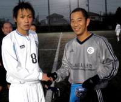 |
|
Joe Takeda shakes hands with the Kawasaki Frontale U18's skipper ahead of their match.
|
YC&AC falls to Kawasaki Frontale U-18
YC&AC Saturday 5th December.
Kawasaki Frontale U-18 produced a great performance culminating in a thoroughly deserved 2-0 victory over YC&AC 1st team in the newly-established Bay City Christmas Cup on a rainy Saturday evening.
Two goals in the second half put paid to the challenge of YC&AC, who battled bravely but were ultimately outclassed by a scintillating young side. more ...
JT
TML Walk Away With Phuket Trophies
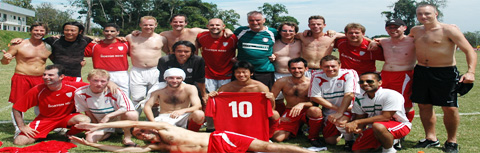
Phuket, W/E 28/29th November.
Footy Japan successfully defended it's Masters title while BFC won the open at the 7th Phuket Soccer 7's. In a repeat of the final last year, Footy Japan beat ex socceroos Bondi FC 2-1, while first-timers BFC beat Singapore Spartans on penalties after a goal-less draw. The Footy Japan and BFC teams were a mix of players and ex-players from 9 different TML teams, proving once again that Tokyo has one of the best ex-pat leagues in Asia. more ...
FJ
No Goals in Yabe Clash
Hachioji Park, Sunday 29th November.
RW Clash and Yabe FC fought out a goalless draw in the Sunday evening kick-off at Hachioji.
Nil-nil draws are very unusual in the TML, from a quick review of the results from all three divisions this season, only one other game has remained goalless. Whether the lack of clean sheets is due to the attacking flair of the league's strikers or the ineptitude of its defenders is open to debate. In this case it was certainly a case of the defenders having better control of the game rather than a lack of effort from the forwards. more ...
AW
Embassy back to Winning Ways
Oi Futo, Saturday 28th November.
It had been a while. Not since the first day of the season had BEFC won a game. Last week, though, there was much to be proud about in a narrow defeat at YCAC in the cup, and the bare eleven (in number, not stark-naked) that showed up at Oifuto turned in a disciplined performance to notch three long-overdue points. more ...
RH
Lions Slip Past Sala
Hachioji Park, Saturday 28th November.
Lions went into the game looking for all 3-points in this 6-pointer, to open a gap from the bottom, in an attempt to bridge it with the top half of the table. Lions had good team, but missing the influential Abu, who could only play 10 minutes due to illness. more ...
HS
Beauty versus the Beast? Jekyll and Hyde for Both Sides
Fukuda Denshi, Monday 23rd November.
After a penalty victory in the cup it was a rather changed Clash team that took to the (perfectly sized and surfaced) pitch at Fukuda Denshi against free scoring Stoneds. The game ended 2-2 with Clash going 1-0 up then 2-1 down and equalizing shortly before the end. more ...
CA
| 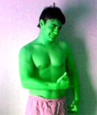 |
|
Andre takes it seriously playing for the the 'Green Machine' seen here relaxing at home.
|
Pinto Plunders Points
Fukuda Denshi, Sunday 22nd November.
Andre bags two and Kuni one, as Hibs beat a strong Lions team.
The Hibs limited the Lions to only a few half chances as Andre and Kuni did the damage at the other end. 0-0 at Half time, the Hibs remained calm, scoring a few minutes into the second half. Josh struck a curving free kick off the bar which Pinto followed in well to head home. 1-0 Hibs. more ...
MM
Geckoes Dickied by YCAC
YC&AC, Sunday 15th November.
The Geckoes were left disappointed not to get at least a point after dominating much of what was an entertaining and well-spirited game. We were the only team to take points in both games last season against the eventual TML Champions, YCAC, and after going in at half-time with much of the play and a goal to the good it looked as if we would walk away with all 3 points this time out. more ...
RW
Hibs Edge BFC in Epic Battle
Hachioji Park, Saturday 7th November.
BFC vs Hibs has become one of the true TML derbies, even if the Brits have faded a bit of late. Perhaps for that reason, we had over five spectators on the sideline to watch us play, a new record for the Hibs this season (Hopefully BFC is ok with us sharing their fans). They were treated to a great game in which the better team won. more ...
AP
Celts Head Over Heels at Sala Defeat
Fukuda Denshi, Saturday 7th November.
History was created tonight as a Kanto Celt, yes a Kanto Celt, upon scoring the crucial third goal which killed the game as a contest, turned away to do a cartwheel into a back somersault! Yes dear readers, there were many witnesses present. more ...
PMG
The Luck of the Dutch
YC&AC, Sunday 8th November.
The trek to YC&C is always a highlight of the season - climbing up the hill from Yamate station, regretting that last pint from the previous night every step of the way...finally finding your way to the ground led by a waft of fried food.... more ...
LVL
BFC Lose to Hibs But Not Without a Fight
Hachioji Park, Saturday 7th November.
I think a neutral would say a draw would've been a fair result. I'm not neutral and think a BFC win was deserved. A missed PK, a blatant PK disallowed, the usual array of quality saves and sweeping by Hitoshi in the Hibs' goal and the final whistle goes after Sho is fouled on the edge of the Hibs' box...free kick...? Apparently not, final whistle. Sour grapes? Maybe. more ...
JM
Shane Battle Back to Rain on Republic Victory Parade
YCAC, Sunday 1st November.
“A free beer for the first man to score in the new kit”
With a depleted squad following a heavy combination of marriage parties, hangovers, injuries and just plain fate a much reduced Shane FC made it to Yokohama for an evening kick off and the opportunity of grabbing 3 much needed points against lowly Guarana Republic. more ...
MG
The Clash fought the George and the George won.
Horisaki Koen Tues, 3rd November.
On the national day of culture in Japan, what could be more cultural than a game of footy? With players from all over the globe exchanging well-known expletives and a few previously unknown hand gestures.
Horisaki Koen was the venue for this third division meeting between Robert Walter’s Clash and King George F.C. By 7pm there was a chill in the air which gave a timely reminder that winter is quickly closing in and we shouldn’t leave our Xmas shopping too late. more ...
BS
Sun Destroyed by Fighter Jets
Hachioji Park Tues, 3rd November.
The pre-game build up consisted of two messages from the Jets’ Man City supporting captain. One: any team with the word “Utd” in it deserves a good kicking, and two: we will definitely concede goals today. But don’t worry; we usually do anyway.
It was always going to be a high-scoring game. Two teams with great attacks, one with a weak defence and one with a dodgy defence. more ...
JR
YCAC No Longer Fear Old Nemesis
YCAC, Sunday 1st November.
YC&AC 1st team put on a goal rush show on Sunday afternoon, scoring five goals against their old Nemesis, captain Guido Geisler's well commanded Sala FC. more ...
JT
Point Taken!
Oi Futo, Saturday 31st October.
"They will definitely be taking the P**S out of us for doing this warm up" is what I said in between the inward and outward leg rotations to open up the groins as it were. Our ritual of winning every game after warming up as a team ended in a well fought game. Without too much real goalmouth action the game was played in good spirit and at a very competitive level. Overall I think the result was fair.
Credit to the Vags I think they defended very well and perhaps our decision to go with just one out and out striker proved to be a bit too cautious as their back 3 gave very little away and made life difficult for the division's top scoring striker Sho. more ...
RB
Depleted BFC Bag 3 Points
Hachioji Park, Saturday 31st October.
The timing of a fixture is so important to how the weekend pans out....a victory early on a Saturday and the rest of the weekend feels so much sweeter, and so it was to be for BFC against a resilient Zion. more ...
BFC
| 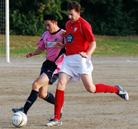 |
|
James Musgrove Shields the ball from Alan Yang in a close battle.
|
Vags Hold Panthers Claws at Bay
Oi Futo, Saturday 31st October.
The first thing that comes to mind on meeting the Panthers this season is ‘what is the opposite of ‘pretty in pink’ because their kit just begs the question… more ...
RS
Celts Shake Off Jet Lag To Win Long Haul Game
Hanno, Sunday 25th October.
A two nil win over one of our many bogey teams allowed Celts to continue a decent little run. On the back of a morale boosting hard fought victory against BFC, it was another decent performance by the hoops and goals from Jo and Pete were just rewards. more ...
GD
Sala Pain as Hibs Snatch Last Minute Clincher.
Hachioji Park, Saturday 24th October.
Sala slipped further into the depths of TML 1 after yet another hard fought battle against a bickering yet purposeful Hibernian on Saturday evening. A late Mcgirr penalty in the dying moments saw last year’s cup winners snatch the points from under the nose of Sala, earning his team a 1 - 0 victory more ...
IJ
Hibs Punish Sala Slapper
Hachioji Park, Saturday 24th October.
As a non-native English speaker I cannot tell you what the word Sala means, but I can tell you that it means "living room" in Portuguese as well as in Spanish. On the pitch however, Sala means trouble. I have played against them about 6 times and every single time, it was a very physical game full of sweet words, specially between Guido and Bevan. more ...
AP
Geckoes Prevail in the Mud
Todoroki, Sunday 25th October.
The Geckoes ground out a tough win on the muddy Todoroki dirt pitch against Zion Sunday night. The Geckoes started very well and put Zion under lots of pressure which told after 10 minutes, ending in a superb shot from the top of the box by Yu Kawane, giving the keeper no chance. more ...
PZ
Homecrowd cheer 4 YCAC….and for Lions 2!
YC&AC, Sunday 25th October.
Lions went into the game against the Champs, with many changes including Kaneko in goal for Orlando, Momo and Mo Birkia in defence for the injured duo of Sima and Notti. The midfield was also missing the key holder, Fahad.
Abu and Ken who caused BFC so much trouble were both available but with strapped up ankles, we were not sure if they would last the full game.more ...
HS
| 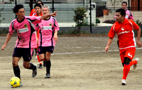 |
|
Mori directs the traffic as Pathers run down the dutch in a colourful battle.
|
No Going Dutch for Panthers.
Mitsuike Koen, Saturday 24th October.
Mitsuike Koen was the scene for the garish clash between Orange and Pink early doors on Saturday. The pitch is relatively short in length and surrounded by trees, giving it an enclosed feel which really helped to crank up the volume of both teams travelling hoards of fans who had come in impressive numbers.
Full warm-ups complete, the pitch marked and it was game on. more ...
BC
BFC Notch First Win Over Resilient Lions
Fukuda Denshi, Sunday 18th October.
BFC went into this fixture following a first defeat of the season at the hands of a typically combative Celts' team but also in the knowledge that they were yet to register a victory over Lions in their two previous meetings. Game on. more ...
BFC
Cup Kicks Off Without Big 2
Tokyo Tues 20th October.
The draw for the first round of this years FJ Cup has been made, with last years 2 finalists getting a bye to the 2nd round. As there are just 30 teams in the cup this year, it was decided to have 28 teams play the first round then having Hibs and Celts join the winning 14 teams in the 2nd round to make it a straight knock-out from there on in. full draw
FJ
British Lions Finally Get One Over The Lions
Fukuda Denshi, Sunday 18th October.
Lions no doubtedly had the strongest squad out for the BFC game despite the late withdrawal of Captain Somi, lethal striker Ahmed AlZahrani, and BFC's ex-midfielder Momo. more ...
HS
| 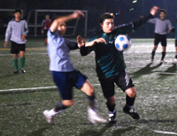 |
|
Andre Pinto Shields the ball from Zion (or is he trying to slap it?)
|
Kuni Calms Hibs Frustrations
YC&AC Sunday 18th October.
Hibs went all the way to YCAC to face Zion, a team that we knew very little about, except for the fact that they have not beaten anyone so far. However, Hibs have learned from past experiences not to underestimate the bottom table teams. It has cost us at least two championships. more ...
AP
Pumas Slip Past King George
Horisaki Koen. Saturday 17th October..
Pumas got their 2nd straight win as their aging striker, 'Silver fox' scored a late winner putting them above opponents King George in the Division 3 tables.
It's great to turn up to play and find the pitch is a beautiful 3rd Generation astroturf surface, it makes the hour trek there all worthwhile. And then it decides to start raining. more ...
MB
Celts Lift Top 3 Curse
Fukuda Denshi, Saturday 10th October.
Despite their highest ever finish in the TML last season (4th) the Kanto Celts did not manage to beat any of the top three. Having been beaten by YC&AC and Hibs already this season, it would have been hard to back the Celts for this one. The sense of relief and achievement come the final whistle on Saturday was clear then, as the hoops pulled off a real upset toppling the high flying BFC.. more ...
PM
| 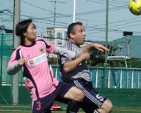 |
|
Andy Chambers causes trouble with his strength up front for YCAC 2nds
|
Buen Tiempo Pero Mal Tiempo
YCAC, Sunday 11th October.
Perfect weather and a great surface greeted the Panthers upon arrival at YCAC on Sunday morn. At the other side of the ground the Silver and Navy were being put through their paces in a pre-match warm-up and were clearly up for it.
The Panthers after a strong start to the season lined up feeling confident but after a close pre-season encounter against the seconds, they knew that nothing could be taken for granted. more ...
JT
Makeshift Hibs Beat Makeshift Geckoes.
Fukuda Denshi, Saturday 10th October.
If a good football game is like a fine wine, then Saturday's match between Hibs and Gecks was a decanter of Saizeriya red. Lacking in taste and character perhaps, but with plenty of zing for your yen. more ...
JA
Celtic Win Tartan Challenge
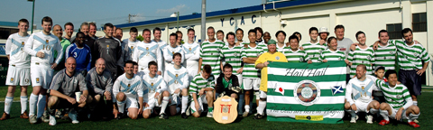
| 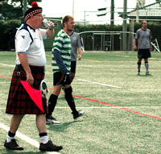 |
|
Not a common site at TML matches, Kilted linesman with flag & Beer!
|
YCAC, Saturday 10th October.
Yokohama welcomed the arrival of the Tartan Army last week, on the road once again supporting their beloved Scotland who were here to play against Japan in the Kirin Challenge (friendly match). TML Organizer, Sid, was once again asked if he could set up a friendly match for the men in kilts. As before (report on last visit) he obliged, setting up a 3 way tourney with YCAC Old boys and Tokyo's Celtic Supporters Club joining the TA.
PHOTO GALLERY
In the first match, Tokyo CSC beat the YCAC Over 35's 4-2. The Old boys then took on the Tartan Army, taking a 1-0 lead right into the final stages of the match before the TA kitted out in a very nice St Andrews Cross strip, equalized just before the end. The Final match was a battle for the Tartan Challenge Sheild between Martin Burns' Tokyo CSC and the TA led by Mark Sims. CSC took this by storm 4-1 despite going a goal down, but it was all played in great spirit.. more from the Scotsman ...
A Game of Two Halves?
|
|
Matt Wallace headed home number 2 for YCAC2nds!
|
YCAC, Sunday 11th October.
Although it is too early in the season to read too much into league positions, YCAC 2`s versus Panthers pitched the undefeated league leaders against a YCAC team yet to get off the mark. And a good game it turned out to be - 5 goals, 2 red cards, and 1 controversial winner in extra time.
Panthers were on top for the first 20 and must have been left scratching their heads at being 2 goals down at the end of the first quarter. Classic counter-attacking and a bit of hesitation in the Panthers defence led to goals from Neil Shonhard and Matt Wallace more ...
SM
| 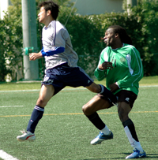 |
|
As if losing isn't enough, Zion's Benji gets a boot in the family jewels for his troubles.
|
YCAC Give Zion More Misery
YCAC, Sunday 11th October.
YC&AC 1st team scored seven goals to take their second victory of the season against a persistent ZION FC on a sunny Sunday afternoon at YC&AC, on October 11th. It wasn't all one-way traffic though as Zion pulled 2 goals back, one either side of half-time but YCAC also could have netted a few more. more ...
JT
TML NEEDS YOUR HELP
Setagaya Koen, 10 minutes out of Shibuya, has a beautiful 3rd generation pitch (some of you may have played there last season). Unfortunately it is usually used for baseball so it's difficult to book it for the league. It has come to our attention that from November 1st, despite having floodlights, the ground closes at 5:00pm instead of 9:00pm as it does in the summer. This is because baseballers don't play in the cold winter evenings & they have been closing early since the days when it was a dirt ground. We have spoken to the Ward Office about having the ground open til 9:00pm during these winter months as us footballers would be happy to use it, but of course getting this done could take a while as it must go though committees that will take time to process the request. What could speed up the process is if they get lots of requests through the 'comments' page of their website. If you don't read or write Japanese, please could you ask your spouse, girlfriend, co-worker to fill in the form (JAPANESE ONLY) HERE requesting that the ground be made available in the evenings from November. Don't worry if you don't live in Setagaya-ku, anyone can fill in the form, the more the merrier! This could help us secure a much needed ground in a very good location. For an explanation in Japanese CLICK HERE ...
FJ
BFC and FCI turn football into Cricket in a 12 goal thriller.
ASIJ, Sunday 4th October.
This was always going to be a difficult one. The match report I mean. Who can actually recall 12 goals in detail? Wish I was writing the Lion 'n Zion report. You could play around with that all day.
The new Referee that TML managed to ship in from her majesty's shores specially for this game was probably wondering whether he had boarded the wrong vessel and ended up in the southern cape of Africa for the ICC trophy finals.
He was quite good by the way. More of him please. more ...
EGK
| 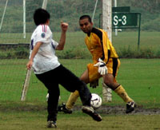 |
|
Despite the mud, Romen kept his sheet clean as he deputised in goal!
|
Stuck in the Mud, or Not.
Misato, Saturday 3rd October.
Well it came as a shock to everyone that the infamous Misato ground was given the nod early on Saturday morning despite the rain that'd been falling the previous day.
Actually for those who were awake at 7:00am the first thing that greeted them on opening the curtains was blue sky and sunshine...... but it didn't last.
A full compliment of Pumas made it to the ground on time where the surface was nicely watered to the extent of being stodgy in places and the overcast sky just promised more rain and duly obliged. more ...
MB
Celts Bag First Win at Expense of Geckoes
Misato, Saturday 3rd October.
Kanto Celts proved too strong to a seemingly under strength Geokes outfit in Misato on Saturday.
1 point from 9 going into this game, the Celts were desperate for 3 points to kick start their season. The general consensus though was that the gods weren’t smiling on us for last week’s 1-1 against the Lions. more ...
PMG
Hussein's Brace helps Lions Past Zion
Misato, Saturday 3rd October.
Again Lions had barely 11 players to start with, due to 4 or 5 players busy in the African Festival, and with a week of rain, the pitch was a challenge. more ...
HS
Smells Like Team Spirit
Misato, Saturday 3rd October
After two consecutive defeats, the Dutch Embassy team had JETRO, another division 2 stalwart, in their sights to kickstart the season. more ...
LVL
| 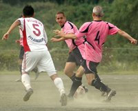 |
|
Pink Panther Ben Cordier recieves a pass from Andy Vaughan through the dust
|
Panthers Purr as Swiss Watches
Sagamisansen, Saturday 26th September
The players of both teams got an insight into the minds of their wives or girlfriends last Saturday upon arrival at Ebina as they were greeted by a dusty, balding pitch in need of some face paint.
TML players expect it all these days, flash cars, pop star girlfriends, onigiris and lined pitches. The Swiss literally laid down a marker by putting the Panthers to shame in the pitch marking stakes.
Would this pre-match impressive form prove to be an important psychological edge in the match itself? more ...
BC
| 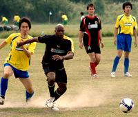 |
|
Puma Striker George races after a through ball with Clash's Kazz giving chase.
|
First Point for Pumas
Misato, Sunday 27th September
Division 3 Newbies got their first point point of the season in a 1-1 draw with Robert Walters Clash, despite their best efforts to give it away. Luckily Clash were having none of it, also doing their very best not to win, as chances went begging.
One would have thought 10:00am on a Sunday was the perfect time to get your football fix, meaning you could be back in town in the early afternoon to grab a Roast lunch & a few pints.
Not so for some night owls, who turn up a minute to kick-off then whinge like hell because they are left as one of the 4 players on the bench. more ...
BS
Sala Banish Their 1st Match Demons
| 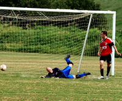 |
|
Birthday boy Sam Matthews scores a Hat-trick as Sala beat JETS 5-0.
|
Misato, Saturday 26th September
With a major point to prove after a shocking defeat to the Geckoes, and a burning desire to get their first win, Sala were super fly TNT right from the off in this one. And heeding the words of their Captain, Herr Geisler, they "closed and opened the fist" more frequently and expertly than a..................well, I'll let u finish that off yourselves as it really depends on what kind of videos you watch. Are you more a "Rocky" kind of guy or "Anastasia's Odessey to Uranus"??
Some great passing early on and some nice little triangles in midfield (dainty ones like Kraft make with cream cheese) quickly led to chances for Sam, Stu, Guido and Toby. more ...
ST
King George Give Yabe the Royal Treatment
| 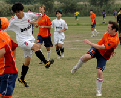 |
|
James Bates scored with a speculative punt from halfway ('It was a shot, honest!!')
|
Misato, Sunday 27th September
It was the morning after the night before; players crawled out from their respective homes/rocks/love hotels to converge, once again, on an unsuspecting Misato. The low hanging cloud like a pool of stale smoke over a late-night poker game and a breeze from the north made for ideal conditions to play the beautiful game.
As 11.30am struck, the teams lined up ready to begin the contest. Yabe F.C. wearing white faced King George F.C. in orange. Both teams looked confident, although King George were without the drunken Adam ‘Teenwolf’ McCann and the influential Tomoki ‘Terminator’ Shiota who was called away to the United States of A at the last minute. more ...
BS
Vags Hold on for 2nd Victory
Hachioji Park, Sunday 27th September
The vagabonds made it two wins on the trot/bounce/spin, whatever you prefer, overcoming the Barbarians by 3 goals to 2 at Hachioji koen. Taking to the field in a kit that smelled of cats urine the vagabonds dominated the first half in terms of posession and territory and at times played some splendid link-up football. more ...
WB
Panthers Take Down Embassy
Misato, Saturday 19th September
Panthers continued their strong start to TML 7 with a hard fought victory against BEFC. After watching the late drama between El Diego and Dutch the game kicked off with a fairly strong wind blowing, typical Misato style. The pitch had surprisingly kept in decent shape despite the previous week’s rain. more ...
RB
| 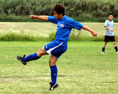 |
|
Sasaki fires home the first goal for JETS
|
Jets climb over Mt. Zion
Misato, Sunday 13th September
Saitama Jets engaged in a well fought, well mannered game versus Division I newcomers, Zion FC. The game started with both teams struggling to fill their starting 11, with Zion starting with only 10 men. The Jets quickly turned to the attack (although most of them probably didn’t realize they were playing against an under-strength team) and had a few chances in the opening 10 minutes. Veteran Sasaki coolly converted a flick-on by newbie Andrew via the Delap like long throw of John “Wildebeest” Rayner. more ...
ET
SPONSOR DISCOUNTS
It has been brought to our attention that some TML members are abusing the system for getting discounts at TML sponsor pubs. If the abuse continues, we may lose our Pub sponsors, then it will be YOU the players who lose out!!
Please make sure that you SHOW YOUR CURRENT TML CARD, BEFORE asking for your bill and if you are with a group of players, ALL PLAYERS should show their cards! This discount offer is exclusive to TML MEMBERS ONLY and excuses of 'I don't have my card with me' won't work! Some of you are still using last seasons card, this will be OK til the end of September, by which time your captain will have your new card for you, then please start using that!
Pubs currently offering TML discounts: Hobgoblin, Legends, What the Dickens, Town Cryer, Lime/Tokyo Sports Cafe, Footnik, The Tipplers Arms, King George-Omiya. For discount details click here
|
Nosebleed Jets Soar
Misato, Sunday 13th September
The Jets 2nds ended last season 2nd from bottom of the 3rd division, ranking them a lowly 29th out of the TML's 30 teams. The men from Saitama seem intent on improving that standing, and a 3-1 victory over a combative Clash side sees them with the maximum 6 points from 2 games so far. more ...
GG
Can International Walk the Walk?
Hachioji Park, Saturday 5th September
For two years now there has been a persistant buzz around the TML. What started as little more than a whisper, the beating of an aural butterfly's wings from the depths of the then newly formed TML division three, has steadily grown over the past two years into a furious, omniprescent thunderous roar. The noise is words. The words a question. The question: Are FC International any good? more ...
SS
Making Hay While the Sun Shines
Misato, Sunday 13th September
It had been over 12 months since BFC last played at Misato and in the week leading up to the game nobody was relishing turning out on the "cowfield" against a Geckoes side fresh from having chomped through Sala the previous week. As it was, we misread the omens as an unchanged (subs n all) BFC side had the edge on a depleted Geckoes side from the first hoof. more ...
JM
Ma & Sho Cut Oldboys Apart
Misato, Saturday 12th September
It was a close call at 11am on Saturday morning - after a pretty heavy shower we weren't expecting to play. Luckily we got a break and things went ahead. more ...
RB
Hibs Struggle to Contain Internazionale
Hachioji Park, Saturday 5th September
Hachioji, or "Eight Princes," is near the spot where for hundreds of years the eldest offspring of the eight, great families of the Saitamic Shogunate would gather for plum-gathering and the friendly tests in the bushido arts. Centuries later football's finest from Mexico, England, Brazil, Ecuador, Ireland, Switzerland, the U.S., Japan and probably some other countries gathered there in a twisty battle to the draw between FC International and Hibs. more ...
JA
JETS 2nds Off to a Good Start.
Hanno, Saturday 5th September
A good game of football between JETS 2nds and Y-Abe on a humid evening on the beautiful Hanno ground was won 3-1 by the JETS to get their season off to a nice start. more ...
CP
An Unlucky Start
Misato, Saturday 5th September
It was with great trepidation that the Dutch team prepared to commence their new season.
Clad in their brand new uniforms (please note the dutch flag on the socks) the team got down to business as opposition were newly Division One demoted Swiss Kickers.. more ...
LL
Geckoes Leave it Late to Top Sala
| 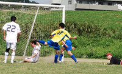 |
|
Geckoes run riot in Sala box.
|
Misato, Saturday 5th September
Very much a game of two halves. Geckoes terrible in the first 45 mins, conceding two goals and being thoroughly outplayed by Sala, who were clearly more up for it than we were.
The Geckoes showed their resolve after the break, creating chance after chance and being held out by the excellent Sala keeper (the now 56 year old Taylor, who used to play for the Geckoes back in the early 70's). more ...
SB
Sala Collapse Faster Than a Captain Stag Camp Chair!!
| 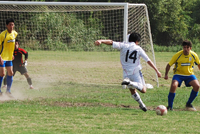 |
|
2 goals by Shigeru Chino weren't enough for Sala as they fell once again to Geckoes.
|
Misato, Saturday 5th September
Oh joy!! A new TML season arrives, players dust off their boots, referees don protective headgear, and everyone gets ready to start the season with gusto. Unfortunately, for Sala all of that gusto has gone already, after a shocking loss (perhaps the worst ever) to their bogey team, the Geckoes. more ...
ST
Off to a Flyer!
YC&AC, Sunday 6th September
It took the BEFC nineteen games to get a win last season, but this time around they started off with a convincing victory under the floodlights at YC&AC against last season’s champs 2nd string. more ...
RH
Bread and Butter
Hanno, Saturday 5th September
After a stern warning from the skipper not to be late for the first game of BFC's season, the skipper (and the kit) promptly missed the train and turned up late... more ...
JM
Some like it hot - but not once they hit forty!
| 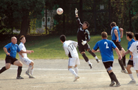 |
|
Eye on the ball! Rod Cramblitt prepares to head home AOB's first goal in TML 7!
|
OiFuto dirty, Saturday 29th August
Summer was not going to fade away quietly - it was well over 30 degrees in the mad-dog mid-afternoon sun and certainly hot enough to fry eggs on the scorched scalps of the more follicly-challenged veterans as the Albion Old Boys stepped onto the oven-baked clay of Oifuto 1 to begin their 3rd TML campaign against the very useful Jetro side that just pipped us for third place in last season's table. Ninety minutes later the sunburnt seniors crawled off the oven-baked clay of Oifuto 1 to begin a few hours of serious alco-rehydration, having scored all five goals in an impressive 4-1 victory. more ...
TC
Hibs Draw First Blood in Celtic Battle
Fukuda Denshi, Saturday 29th August
The ground at Fukuda Denshi is known to many area historians as the site of the Fukudic Uprising of 1272, when the local daimyo and his elite spear-throwing corps defeated a much larger invading force from what is now central Chiba to lay final claim to their homeland. more ...
JA
Slide & Slice is Key to Clash Victory
Hodogaya Grass, Sunday 30th August
The Clash held on to win 3-2 against Guarana Republic at Hodogaya after being 3-0 up at half-time.
On a wet and windy Yokohama morning, the teams kicked off their 2009/10 campaigns. The superb grass pitch, slick from the rain, made for a surprisingly high quality encounter full of passing moves. more ...
RK
Pink Panthers Saved from Blushes
YC&AC, Saturday 29th August
IFG Panthers had a dramatic start to their opening TML division 2 match. Boasting a brand new pink jersey they started against Barbarians with slick football to justify their choice of outfit! Barbarians were strong and determined from the start but the first 20 minutes were pretty much played in their half as Panthers dominated possession and territory. more ...
RB
Beaten by the Heat : Sun too strong for Pumas.
| 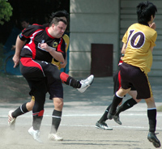 |
|
IFG PUMAS get things underway against Sun United in TML's 3rd Division.
|
OiFuto dirty, Saturday 29th August
The honour of kicking off the new TML season went to international outfit IFG Pumas taking on Div 3 stalwarts, the Japanese Francophiles, Saint-United, more ...
KG
It All Kicks Off at Oi Futo
OiFuto, Saturday 29th August
The 7th season of TML got underway at Oi Futo on Saturday lunchtime under a blazing sun and temperatures in the mid 30's. It was Division 3 newcomers IFG Pumas led by Nick Webb (pictured) who got the latest season underway, against Sun United FC. Unfortuantely for Pumas though, it didn't quite go to plan as they were defeated 3-1. A total of 7 matches were played on the opening weekend, spread out between locations in Tokyo, Chiba, Yokohama and Kawasaki. This season could see teams having to play further afield due to the lack of availability on more local pitches and the closing of Misato in late October (one of our main grounds last season).
Facilities in and around Tokyo are few & far between, with thousands of people vying for those that are available, so any help in securing grounds would be most appreciated and rewarded (financially) by the league. Please help us help you!.
FJ
YCAC Take Inaugural Magnificent 7's
| 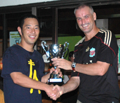 |
|
Joe Takeda picks up YCAC's 2nd silverware of the year, the Magnificent 7's Cup.
|
YCAC, Sunday, August 23rd
Just 1 goal separated the top 2 teams in this Summers inaugural Magnificent 7's summer league, with YC&AC taking the silverware at the expense of BFC. YC&AC had gone into the final game of the tournament leading the group by a 2 goal better difference than BFC but having to face 3rd placed ((by -4 GD) Hibs. BFC however had to play mid table Shane FC, so there was everything to play for. On the night, all 10 teams showed up with full squads, with the exception of Hibs who just fielded 6 players.Still they held YCAC at 0-0 until 5 minutes from time, while BFC took a storming 6-1 lead that looked to have won the title for them. But once Hibs conceded a goal, the flood-gates opened and YCAC stormed to a 4-0 win that was enough to just pip BFC to the post as the latter finished 7-2 winners. more ...
This proved to be a very popular league for all inviolved, so Footy Japan are looking to start a mid-week Magnificent 7's league at Oi Futo Astro from October.
FJ
Hot Stuff in Summer Sevens
| 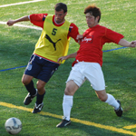 |
|
BEFC's Ferdy challenges for the ball in the Bowl final v El Diego
|
OiFuto 2, Sunday, August 16th
On one of the hottest days of the year, 20 teams fought it our on the astroturf at OiFuto for the honour of becoming champions of Footy Japan's Summer 7's.
None of the previous 7's winners could even make it through to the final as the Yokohama Soccer & Culture Club beat FC Bon Bon on Penalties to become new champions. They had put Alex Sahara & his NSP boys, the New Years 7's champs, out 2-0 in the semifinals and made quick work of YC&AC before that.
In the Bowl final, TML's El Diego beat the British Embassy 2-0 after the latter had seen off Charity 7's Champs FJFC in the semis more ...
FJ
|